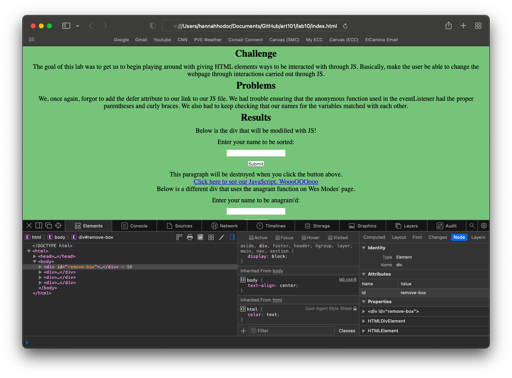
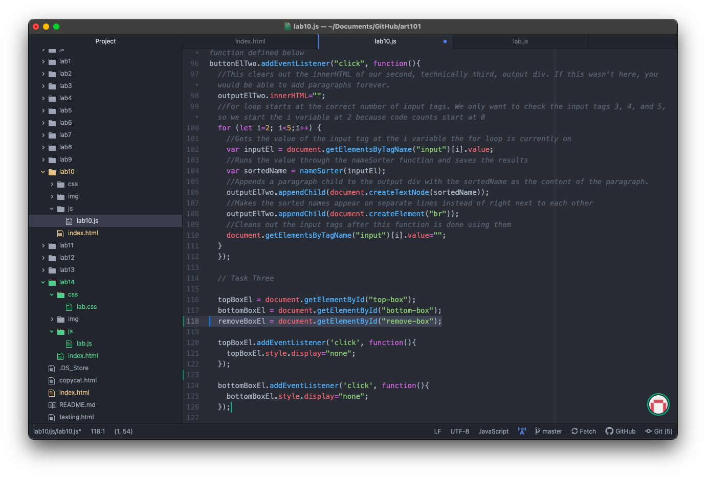

by Emily Baer and Hannah Hodor
The challenge of this lab was to debug some of our old code with our new knowledge.
We had to decide what to do for this lab. We found one past lab that could use some improvement. Other than that, our work has been correct up to this point.
The first thing we did was open the Lab 10 uploaded on Hodor's GitHub. We noticed that clicking the colored divs did not remove them. We then used inspect element to try to find out what the problem was. One of the listed errors was that the page could not find the JavaScript file that was supposed to be linked to the page. This would suggest that the name/path to the file was incorrect. From trying different name combinations, it turned out that the actual JavaScript file was named lab10.js. The second problem we noticed was that we could not click on any of the input fields to enter information. When we opened inspect element no errors were shown. We decided to look at the code that made the divs disappear. It turned out that even though the two smaller divs within the remove-box div were having their display property changed to hidden, the wrapper box itself (remove-box), was still being displayed over the rest of the content. We first tried to fix this by adding an event listener to the remove-box div. Once it got clicked it should change its display to hidden. When this was implemented however, all of the boxed disappeared at once. We took another look at the code. It turns out that every time you click on a child element, that is counted as a click of the parent element. We added a conditional to the event listener. Now the remove-box div only changes its display value to hidden when both of its children have a display value of hidden. This solved the problem. The third problem we discovered was that the link to the JavaScript file led to a 404 error instead of the file. We checked the "a" tag in the HTML file and saw that it had the incorrect path/name. It led to js/lab.js when it should have led to js/lab10.js
Error loading the source of the JS file.
Correcting the script source from "js/lab.js" to "js/lab10.js" in the index.html (highlighted on line 7).
Part 1 of the functioning solution.
Part 2 of the functioning solution.
Part 3 of the functioning solution
Using 'Inspect Element' to observe the newfound issue: not being able to click on the input fields. No errors were shown in the Java console.
Adding an event listener to the remove-box div (highlighted on line 118 in lab10.js)
Adding a conditional to the event listener (highlighted on lines 128-132 in lab10.js)
The Lab 10 assignment on Hodor's GitHub page now correctly works.
Link to the fixed Lab 10 site!